Cinematic underwater close-up macro shot of an 20-year-old wearing a loose white linen shirt, softly lit face and shoulders visible. He holds a bottle of water in one hand, gazing thoughtfully at the glowing vending machine in front. Background is dreamy and softly blurred with hints of blue water, faint glow, and a few out-of-focus fish. Subtle film grain, chromatic aberration, vintage analog camera look, ethereal lighting, and soft focus for a cinematic dreamy atmosphere.
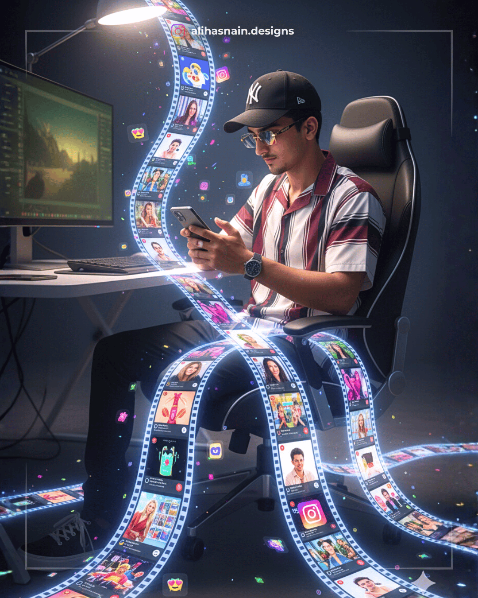
Prompt 42
A hyper realistic image of a stylish young man, sitting at a pc desk, background should be aesthetic and low lights, scrolling on his phone, specs, same outfit, Glowing film strips with different images (instagram reels, posts, stories) flow out above the phone and spread across the floor, wrapping around the chair. Cinematic lighting, realistic, vibrant, vertical 1080*1440 ratio, UHD, Exact same face based on reference image.
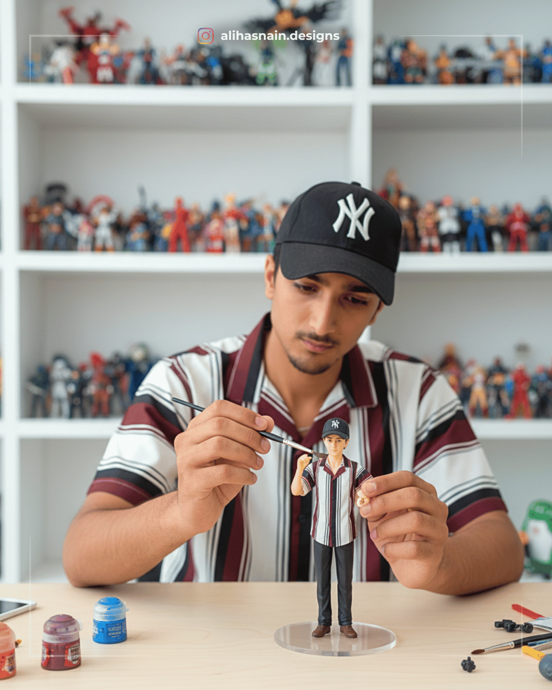
Prompt 43
Create a 1/7 scale commercialized figurine of (the character in the picture), realistic style, in a real environment. Figurine placed on a computer desk. has a round transparent acrylic base. Next to the desk is the real person in the picture, in the real life size with the same attire as in the picture and the figurine, cleaning the figurine carefully with a fine brush. in a modern styled studio room, brightly lit. With some collection of toys and action figures in the background.
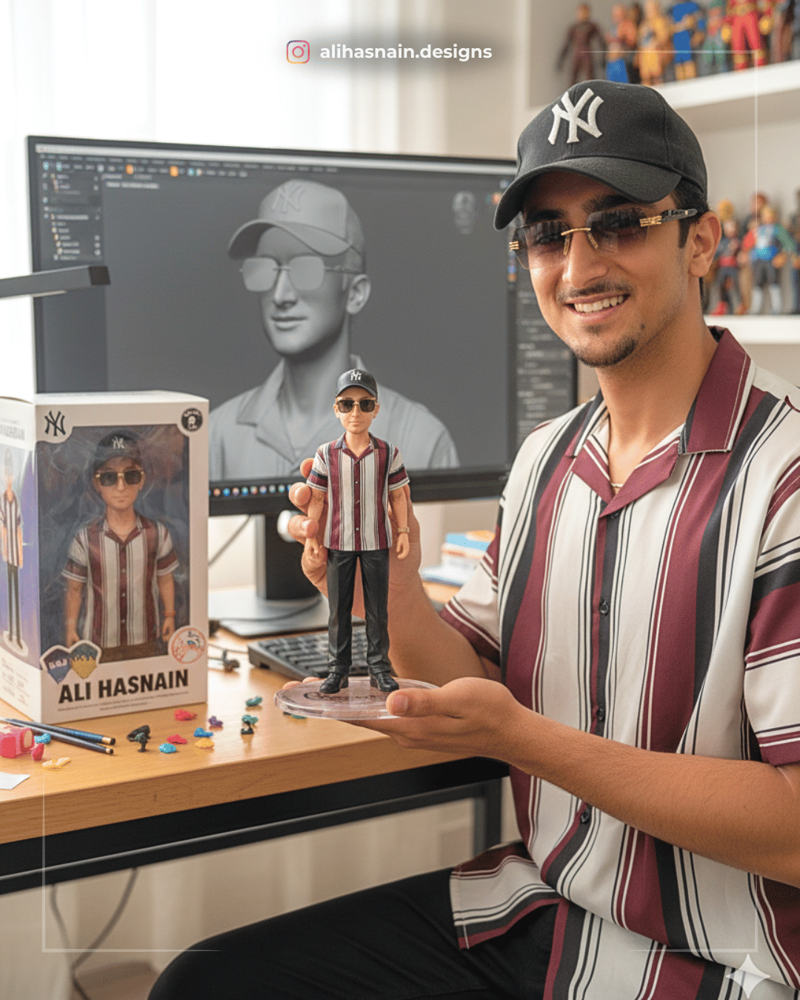
Prompt 44
Create an ultra-realistic image of a man (based on the attached photo) sitting at a computer desk in a brightly lit room. He is smiling while holding a detailed collectable figurine of himself. Highlight the figurine as the main subject, in a realistic 1/7 scale. On the desk beside him is a toy box branded 'Ali Hasnain,' featuring his photo and the same figurine design. The monitor behind him displays 3D sculpting software (such as Brush or Blender) showing a grayscale 3D model of him wearing the same outfit. The desk is scattered with small toy parts and modelling tools, creating a creative workshop-like atmosphere. The overall composition should appear cinematic, highly detailed, and realistic, with soft lighting that emphasises the subject, the figurine, and the 3D model on the screen.
Note : Just replace "boy" and the brand 'Ali Hasnain'.
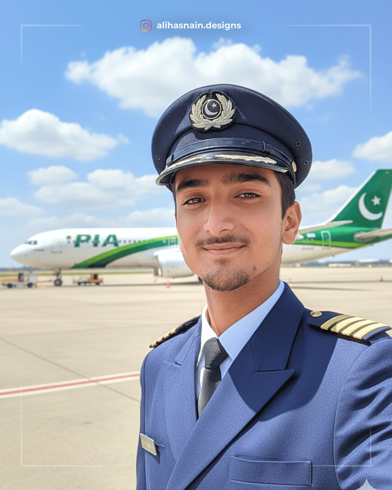
Prompt 45
Create a realistic close-up portrait of a 18-years-old young man, he wears a pilot suit with pilot cap, behind him PIA (Pakistan International Airline) airplane is parked, The background is airport tarmac, blue sky with scattered white cumulus clouds. Exact same face based on the reference image.
Prompt 46
Create a realistic half-body portrait of a 18-years-old young man, he wears a fitted lawyer's suit (black suit and white shirt and a black tie) on the right side of the suit a (balance scale) button is placed, The background is a Court, outdoor, blue sky with scattered white cumulus clouds. Exact same face based on the reference image.
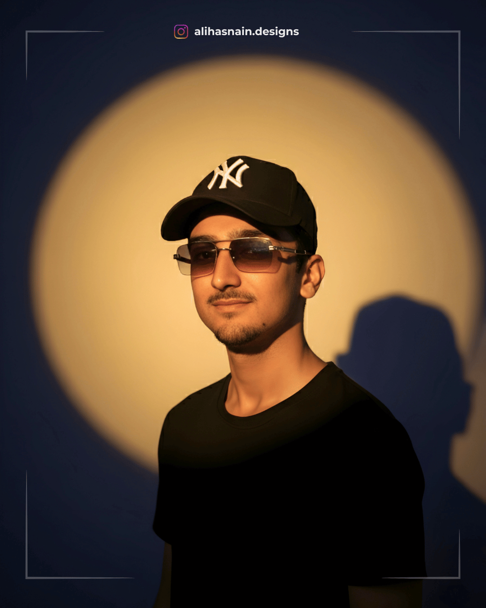
Prompt 47
Create a moody portrait of me (20 years old) with happy expression with dramatic studio lighting. The subject should stand slightly off-center in front of a large, soft golden spotlight circle on a deep navy background.Use soft shadows and a cinematic feel. The subject must wear a plain black t-shirt, have natural skin, sun glasses. Lighting should fall from the top-left, casting a clear shadow to the right. Maintain a 4:3 aspect ratio and keep the camera angle and distance consistent with classic editorial portraits.
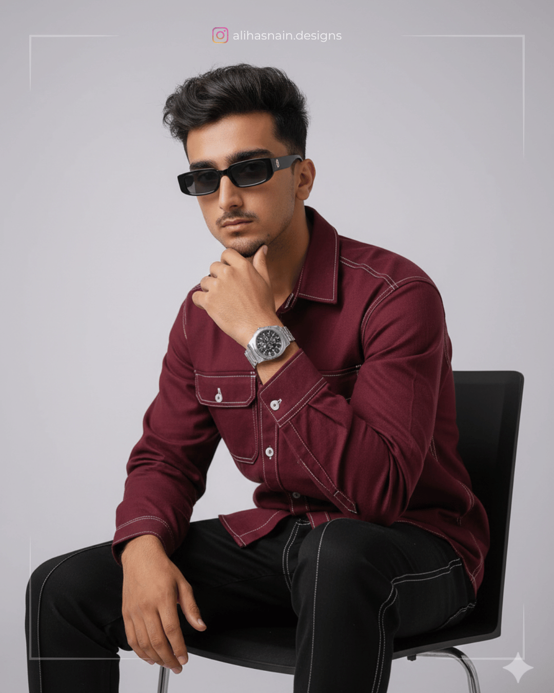
Prompt 48
A studio-style, medium close-up photograph of a young man sitting in a black chair against a plain, light background. He is wearing a dark, rich maroon or burgundy colored collared jacket/overshirt and black trousers with distinctive white contrast stitching. He is also wearing small, stylish black rectangle sunglasses. The man is posed with one leg bent, and his right hand is raised to his chin or mouth in a thoughtful or cool gesture, showing a watch on his wrist. The lighting is soft and flattering. Exact same face based on the reference image.
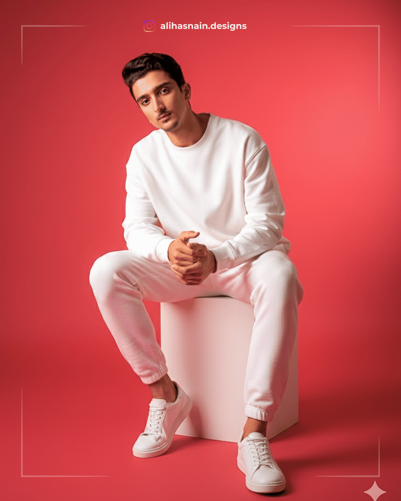
Prompt 49
Stylish fashion editorial photo of a young male model wearing an oversized white sweatshirt and white sweatpants, paired with white sneakers. A soft red studio backdrop with soft cinematic lighting, highlighting textures, futuristic editorial style, model sitting elegantly, head slightly tilted, relaxed posture. The face must match the reference image of me.
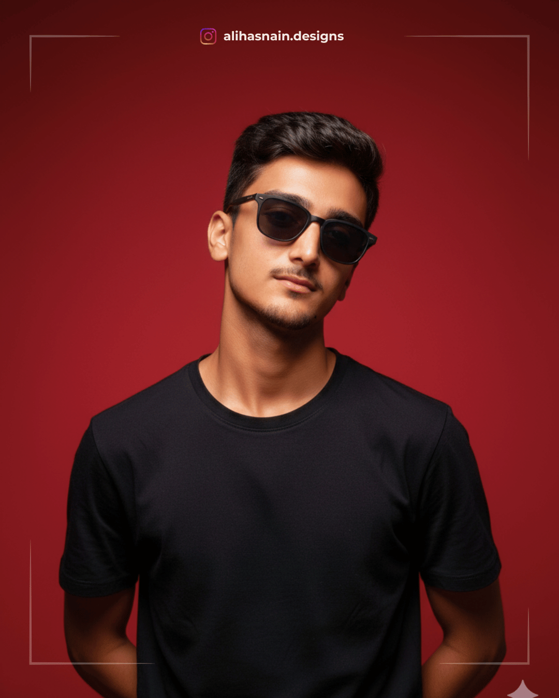
Prompt 50
A highly stylized portrait of same (20 years old) person in image with natural features, wearing a black t-shirt, black sunglasses and standing against a bold red gradient background, confidently.The lighting is dramatic and cinematic, emphasizing his facial structure and giving a luxury fashion magazine vibe. Ultra-realistic, high-detail, editorial photography style. 4K resolution, symmetrical composition, minimal background elements. 4:3 ratio aspect ratio
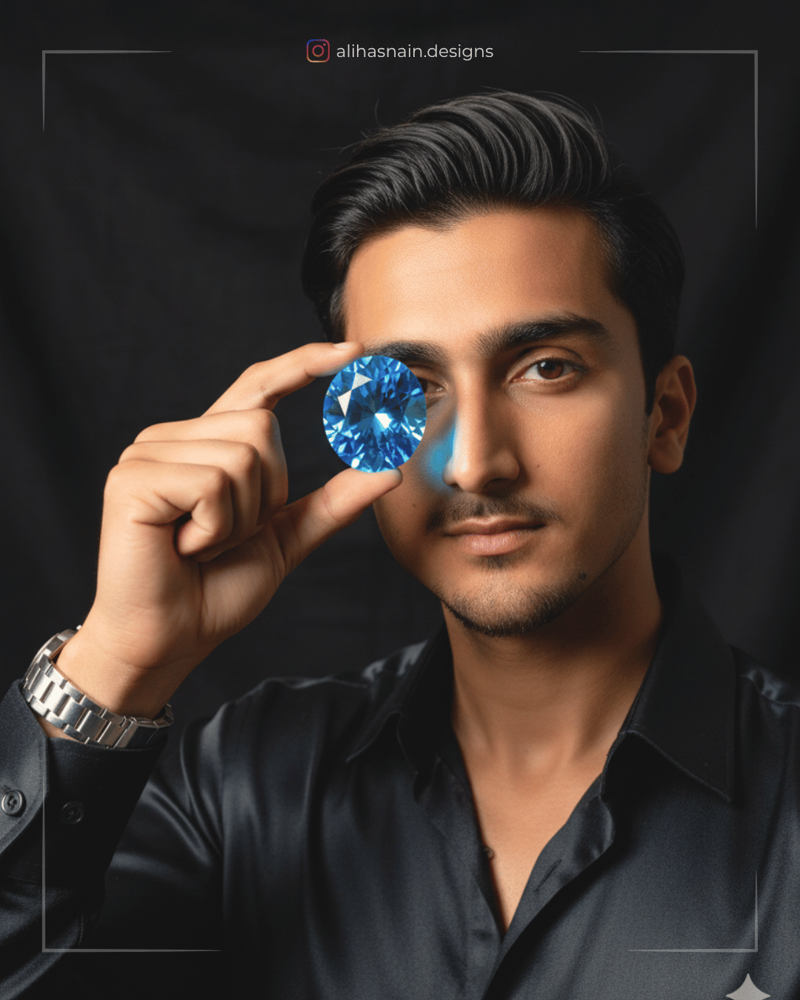
Prompt 51
Hyper-realistic portrait for a luxury campaign, an elegant young man holds a blue diamond in front of his right eye with some distance from his eye. The jewel emits brilliant reflections that illuminate part of his face with a bluish tone, conveying exclusivity and power. The dark, minimalist background highlights the gemstone's brilliance. He has an expression of confidence. Sophisticated style, refined lighting, and a premium atmosphere." Ultra-realistic, cinematic image in native 4K. Close-up portrait lens
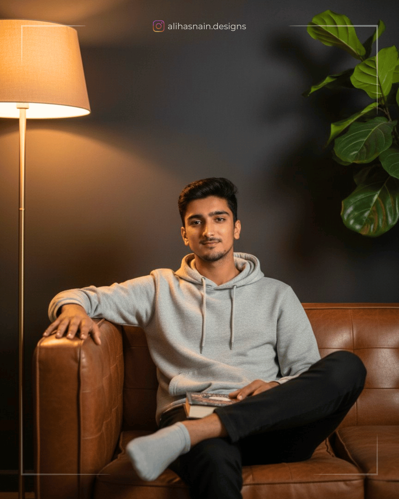
Prompt 52
Ultra realistic, cinematic indoor portrait of a young man sitting relaxed on a brown leather sofa. He wears a plain light grey hoodie and black pants, and light gray short socks, holding a closed book in his lap. His legs are casually crossed, and one arm rests on the sofa armrest. A tall floor lamp with a beige lampshade glows warmly on the left side, casting soft golden light on the dark matte wall. On the right side, a large indoor plant with broad green leaves is visible. Cozy, moody atmosphere, natural skin texture, sharp details, professional studio lighting. Face must exactly match the provided reference image.
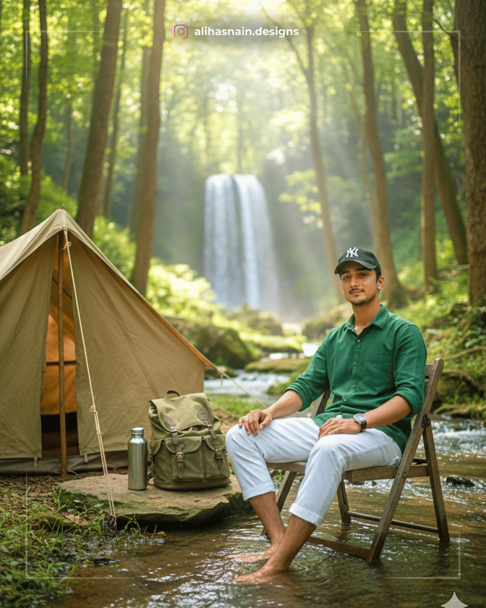
Prompt 53
Hyper-realistic 8K vertical portrait of a (20-years-old) young man sitting on a wooden chair beside a rustic vintage canvas tent near a narrow forest stream in the afternoon, feet gently resting in the water. Wearing a full sleeve green shirt with rolled sleeves and white trousers. He looks directly toward the camera with a soft and attractive expression, natural smile. Face exactly matching the uploaded reference image. A watch. A vintage canvas backpack and a water bottle are placed beside the tent on a rock. Natural sunlight, serene forest background with a beautiful waterfall in the distance, ultra-detailed, cinematic lighting, premium quality.
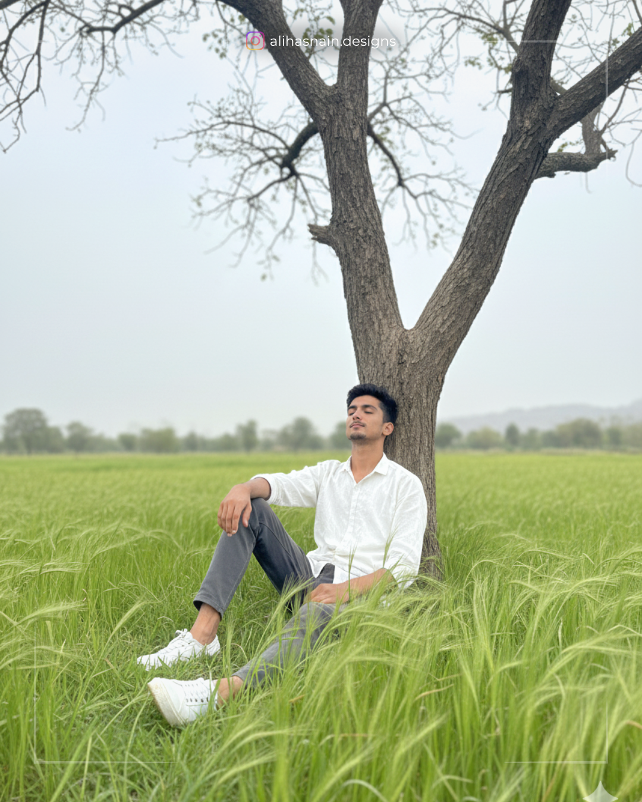
Prompt 54
A cinematic, realistic photo of a young man sitting under a tree in a grassy field. He leans back against the trunk, eyes closed, wearing a loose white shirt and dark pants and casual sneakers. The grass around him is tall and green, swaying slightly in the breeze. The tree is bare with rough branches extending outward, while the background shows a soft horizon of distant trees under a pale, overcast sky. Natural lighting, soft tones, serene and contemplative mood.
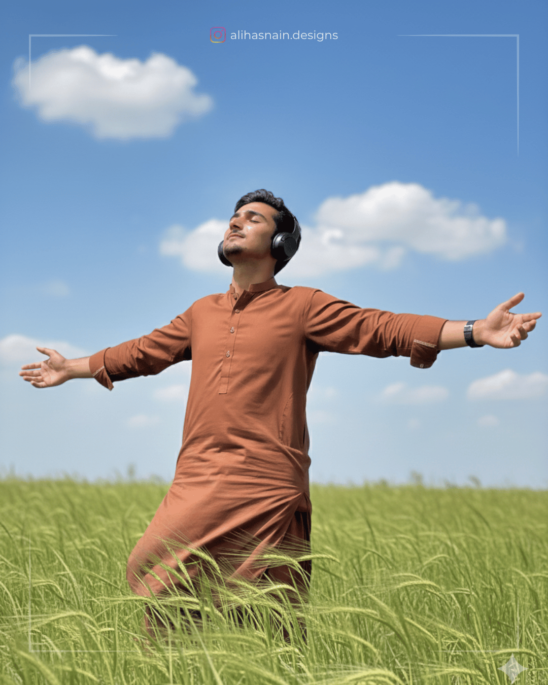
Prompt 55
A cinematic, natural photograph of a young man standing in a lush green field of tall grass under a scattered cumulus clouds. He is wearing a shirt with rolled sleeves, white pant and a watch on his wrist.
His posture is expressive and open, leaning slightly backward with both arms stretched outward, palms open, as if embracing the wind and the moment. His head is tilted back with eyes closed, wearing large over-ear black headphones, giving a calm and free-spirited vibe.
The face is exactly the same as the provided reference photo, with 100% accuracy in facial structure, expression.
The perspective is slightly low-angle, with blurred green grass in the foreground creating dreamy depth. The overall color grading is natural, with fresh greens of the field and soft daylight balanced against the sky. The mood feels cinematic, serene, and full of freedom.
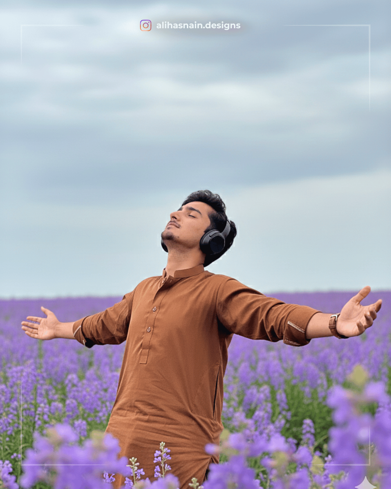
Prompt 56
A cinematic, natural photograph of a young man standing in a purple flower field under the gray clouds. He is wearing a shirt with rolled sleeves, white pant and a watch on his wrist.
His posture is expressive and open, leaning slightly backward with both arms stretched outward, palms open, as if embracing the wind and the moment. His head is tilted back with eyes closed, wearing large over-ear black headphones, giving a calm and free-spirited vibe.
The face is exactly the same as the provided reference photo, with 100% accuracy in facial structure, expression.
The perspective is slightly low-angle, with blurred purple flower field in the foreground creating dreamy depth. The overall color grading is natural, with fresh greens of the field and soft daylight balanced against the slightly gray sky. The mood feels cinematic, serene, and full of freedom.
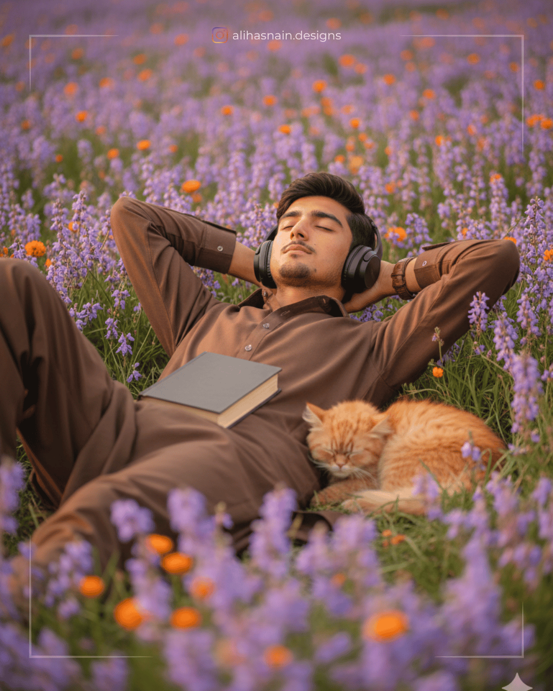
Prompt 57
Hyper-realistic low-angle shot of a young 18 year old boy lying in a dreamy purple flower field. He wears a modern check shirt over black tee, arms bent under his head, eyes closed peacefully. Overhead headphones, an upside-down a book on his chest, and a persian cat tubby sleeping beside him. Floral foreground overlap, sharp 8K detail, cinematic color grading, soft shadows. The face must match the reference image of me.
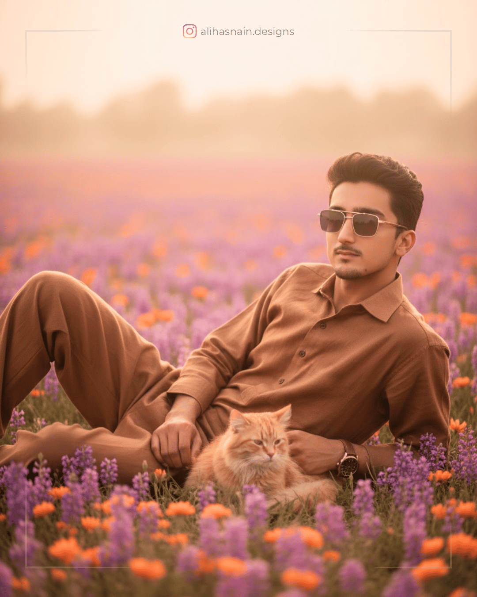
Prompt 58
Ultra-realistic cinematic portrait of a man (keep the same face and hairstyle as in the reference photo). He is lying in a dreamy purple flower field next to a soft orange cat. He wears a monochrome brown outfit — shirt and matching trousers, with stylish leather brown watch on his wrist and sunglasses. The scene feels romantic and surreal: shallow depth of field, soft cinematic lens blur, out-of-focus orange flowers in the foreground creating bokeh. Do not change and edit my face.
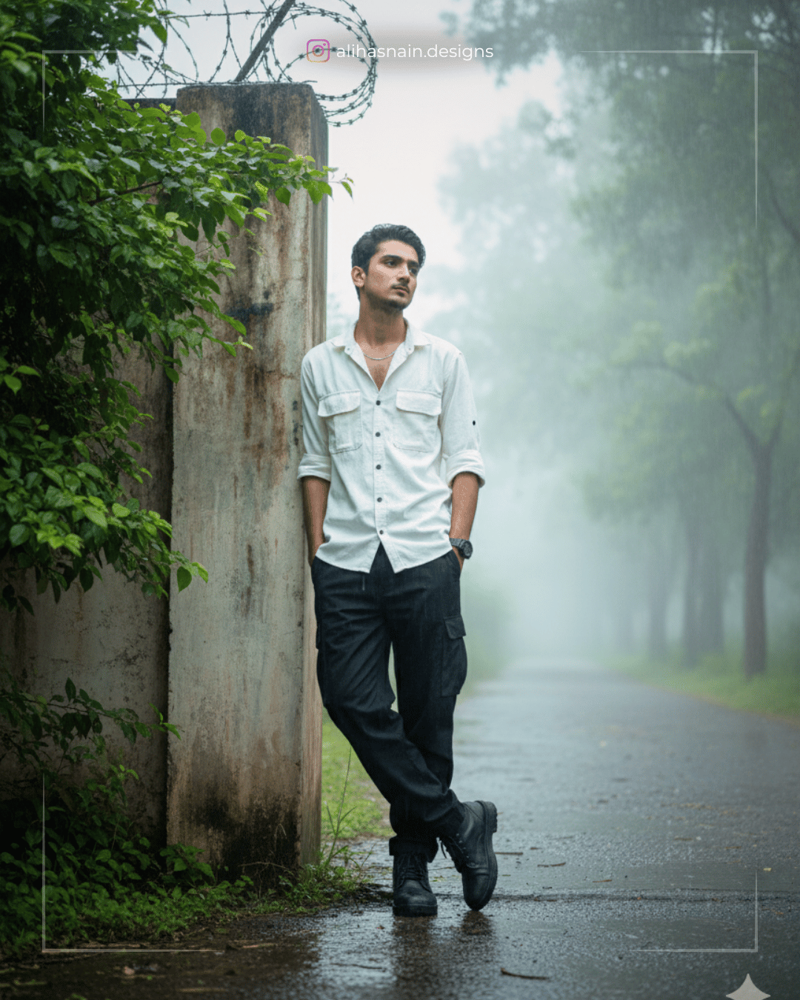
Prompt 59
A cinematic ultrawide, low-angle shot of a young man standing in the same outdoor setting. The man is leaning casually against a tall weathered concrete gate, surrounded by lush green branches and barbed wire above. The ground is wet, reflecting the rainy and misty atmosphere. a man wearing a white open rolledup sleeve cargo shirt and black baggy cargo pant. Keep the misty forest pathway in the background with a dreamy, moody atmosphere.
Prompt 60
A cinematic, realistic portrait of uploaded image of me sitting on a simple chair placed in the shallow water of a calm lake, He is wearing a slightly open white shirt with rolled-up sleeves and light beige trousers, wet from the water, He holds an open book with his right hand and a single red rose holding naturally in his left hand, adding a poetic touch. The background shows misty hills and a soft cloudy sky, creating a dreamy, moody, and aesthetic vibe. The water gently ripples around the chair, reflecting light, Highly detailed, realistic lighting, natural colors, soft depth of field.